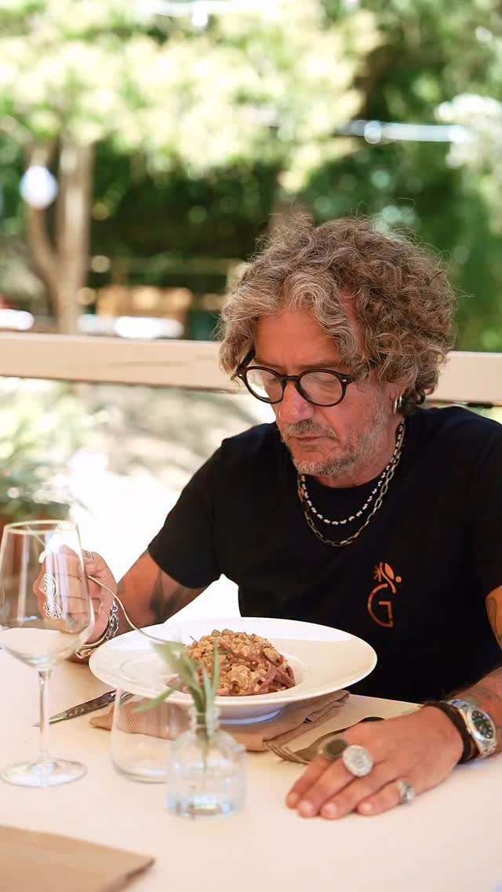
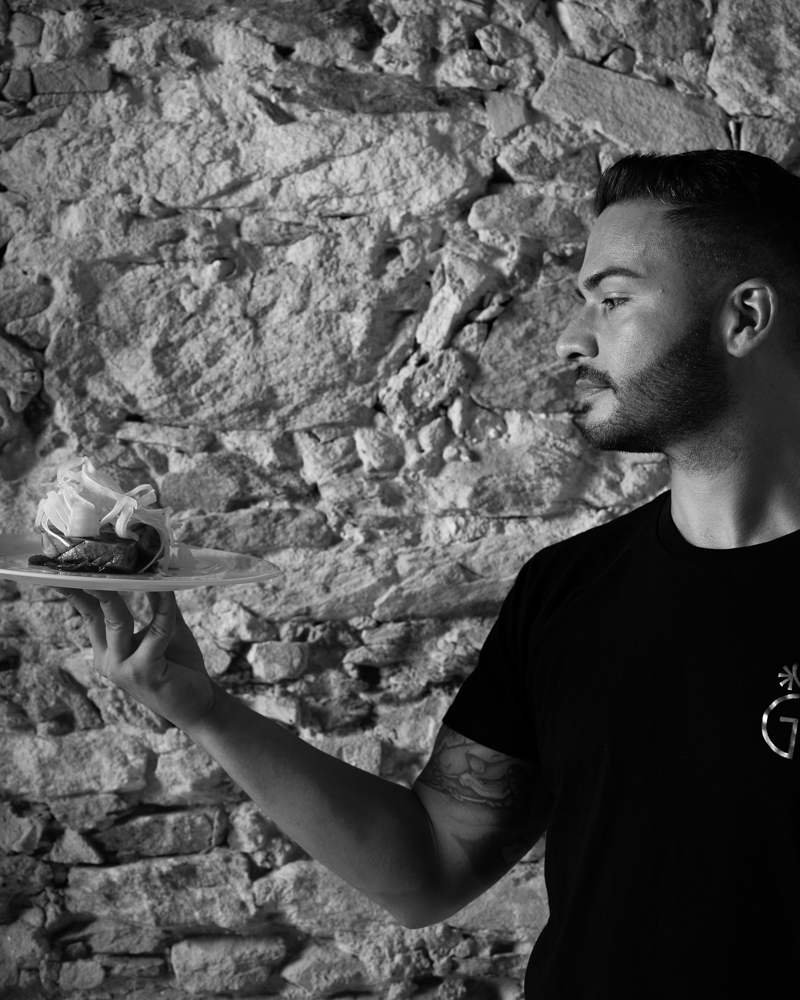

Due amici, una seconda vita, un nome fra gli ulivi.
Giulivo apre le porte il 4 luglio 2025 in Località Luchetta, frutto dell'incontro fra due percorsi molto diversi che si sono ritrovati intorno alla stessa idea: buona cucina e buonumore.

Guido "Guidino" Genovesi
Dal Grande Fratello ai fornelli, con la filosofia in tasca.
Guido si è fatto conoscere nel 2004 come concorrente del Grande Fratello, e per anni ha lavorato in TV come comico e conduttore. Nel mezzo, tre lauree — l'ultima, in filosofia, presa da poco. A sessant'anni ha deciso di ribaltare l'ordine delle cose: prima ci si gode la vita, poi si comincia davvero a lavorare.
"Inizio a lavorare davvero a sessant'anni."
Per Guido, Giulivo non è solo un posto dove cenare: è un modo per restare in mezzo alla gente, in un'epoca fatta soprattutto di relazioni a distanza. Il nome racconta entrambe le anime del progetto — gli ulivi che circondano il giardino, e quel clima festoso e solare che vuole respirarsi a ogni tavolo.

Gabriele Vitale
L'esperienza che serviva per far funzionare tutto.
Trentaquattro anni, pontederese, Gabriele arriva a Giulivo con anni di gestione di locali alle spalle, fra Pontedera e la Valdera. È lui a occuparsi degli aspetti pratici: gli ordini, la burocrazia, l'impostazione dell'offerta in cucina. Dopo anni da dipendente, era arrivato il momento di mettersi in proprio — e l'occasione, raccontano entrambi, è nata proprio dall'amicizia con Guido.
I due si conoscono fuori dal lavoro da tempo, e si sono divisi i compiti senza troppe sovrapposizioni: idea e accoglienza da una parte, organizzazione e cucina dall'altra. Gli ultimi mesi prima dell'apertura — fra riqualificazione del giardino e stesura del menù — sono stati un tour de force, ma l'entusiasmo non è mai mancato.
La ricetta è semplice: mangiare, bere, stare in compagnia.
Si mangia bene
Piatti toscani, ingredienti di stagione, ricette che non cercano scorciatoie.
Si beve bene
Una cantina pensata per accompagnare il menù, senza inutili complicazioni.
Si sta in compagnia
Un luogo pensato per le chiacchiere, non solo per il pasto: il buonumore è ingrediente, non contorno.
— Guido & Gabriele